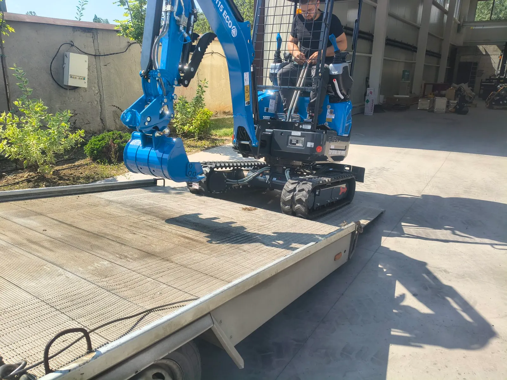

Минибагер в Голяновци — близо до базата
Услуги с минибагер в с. Голяновци: огради, дренаж, изкопи, свредел и чук. Доставка от Костинброд — често включена при цял ден. Без извозване на материали.

Голяновци е едно от най-близките села до нашата база. Това намалява времето за пристигане и прави полудневните поръчки по-смислени спрямо далечни обекти.
Терен
Типични дворни и стопански парцели. За свредел и тесни канали условията са добри; при по-стари насипи с камъни предупреждаваме за темпото на работа.
Услуги в Голяновци
- Изкопи за огради и колове
- Дренаж и канали
- Подравняване на двор
- Разчистване с палец преди нов изкоп
Доставка
Доставка на багера: включена при цял ден. Цени за работа: изкоп 200–230 € / смяна. Извозването на пръст не е включено.
Услуги в Голяновци
- Изкопи за канали и шахти
- Изкопи за огради и дупки за колове
- Дренаж и ВиК
- Подравняване на терен
- Свредел 150 мм
- Хидравличен чук
- Хидравличен палец
Цени за Голяновци
Изкоп / планиране: 200–230 € / смяна. С чук: 250–270 €. Минимум половин ден: 100–120 €.
Доставка на минибагера: включена при цял ден (много близо до Костинброд). Пълна таблица: Цени.